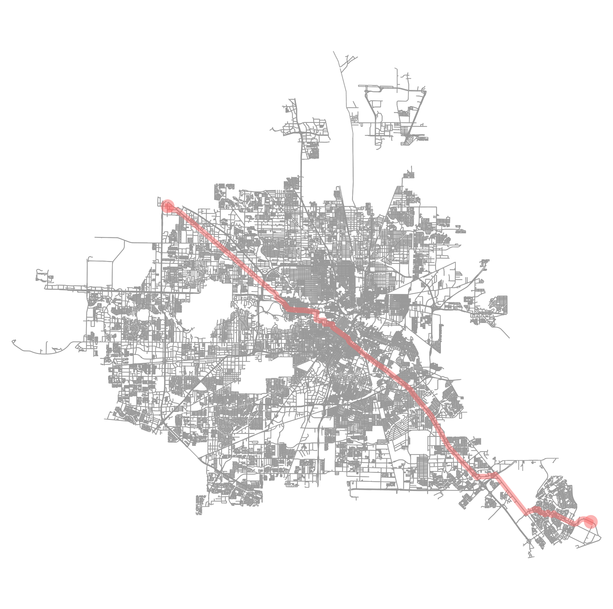

ROUTE POINTS
Source: (29.570586, -95.087936)
Destination: (29.866332, -95.557894)
Total Distance: 61902.8 meters
Route calculated in 1.271 seconds using A*

DIRECTIONS
Continue Northeast onto Space Center Boulevard for 14 meters
Turn right onto Space Center Boulevard
Travel Northwest for 4469 meters along Space Center Boulevard
Turn left onto Torry Pines Road
Travel Southwest for 315 meters along Torry Pines Road
Turn right onto Penn Hills Lane
Travel Northwest for 533 meters along Penn Hills Lane
Turn left onto Pineloch Drive
Travel Southwest for 376 meters along Pineloch Drive
Turn right onto Sun Harbor Drive
Travel Northwest for 978 meters along Sun Harbor Drive
Turn left onto Danforth Drive
Travel Southwest for 289 meters along Danforth Drive
Turn right onto El Camino Real
Travel Northwest for 190 meters along El Camino Real
Turn left onto Clear Lake City Boulevard
Travel Southwest for 1075 meters along Clear Lake City Boulevard
Turn right onto Galveston Road
Travel Northwest for 5275 meters along Galveston Road
Turn left onto Freehill
Continue Southwest onto Freehill for 355 meters
Turn right onto Freehill
Travel Northwest for 54 meters along Freehill
Turn left onto Freehill Street
Travel Southwest for 298 meters along Freehill Street
Slight left onto Kurland Drive
Travel Southwest for 1377 meters along Kurland Drive
Turn right onto Gulf Freeway Frontage Road
Travel Northwest for 1519 meters along Gulf Freeway Frontage Road
Slight left onto Gulf Freeway
Continue Northwest onto Gulf Freeway for 247 meters
Slight right onto Gulf Freeway
Travel Northwest for 789 meters along Gulf Freeway
Slight right onto Gulf Freeway Frontage Road
Continue Northwest onto Gulf Freeway Frontage Road for 324 meters
Slight left onto Gulf Freeway Frontage Road
Travel Northwest for 2198 meters along Gulf Freeway Frontage Road
Slight right onto Gulf Freeway
Continue Northwest onto Gulf Freeway for 441 meters
Slight right onto Gulf Freeway
Travel Northwest for 14379 meters along Gulf Freeway
Slight left onto Gulf Freeway Frontage Road
Continue Northwest onto Gulf Freeway Frontage Road for 418 meters
Slight right onto Gulf Freeway Frontage Road
Travel Northwest for 141 meters along Gulf Freeway Frontage Road
Slight left onto Pease Street
Travel Northwest for 2330 meters along Pease Street
Turn left onto West Dallas Street
Travel Southwest for 848 meters along West Dallas Street
Turn right onto Gillette Street
Travel Northwest for 390 meters along Gillette Street
Turn left onto Allen Parkway
Travel West for 695 meters along Allen Parkway
Turn right onto Allen Parkway Frontage Road
Travel Northwest for 231 meters along Allen Parkway Frontage Road
Turn left onto ['Studemont Street', 'Montrose Boulevard']
Travel Northeast for 324 meters along ['Studemont Street', 'Montrose Boulevard']
Slight right onto Studemont Street
Travel Northeast for 489 meters along Studemont Street
Turn right onto Washington Avenue
Travel Northwest for 3070 meters along Washington Avenue
Slight right onto Washington Avenue
Continue Northwest onto Washington Avenue for 5 meters
Slight right onto Washington Avenue
Travel Northwest for 1552 meters along Washington Avenue
Slight left onto Hempstead Road
Travel Northwest for 13999 meters along Hempstead Road
Turn left onto Gessner Road
Travel Southwest for 54 meters along Gessner Road
Turn right onto Sommermeyer Street
Travel Northwest for 1215 meters along Sommermeyer Street
Slight right onto Roxburgh Drive
Travel Northwest for 328 meters along Roxburgh Drive
Turn left onto West Little York Road
Travel Southwest for 212 meters along West Little York Road